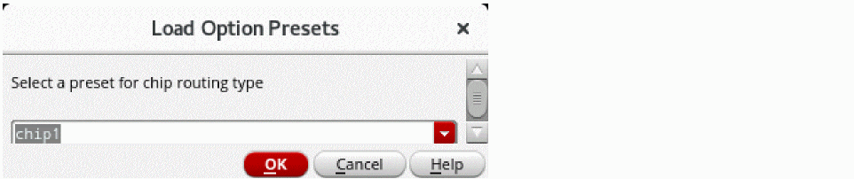
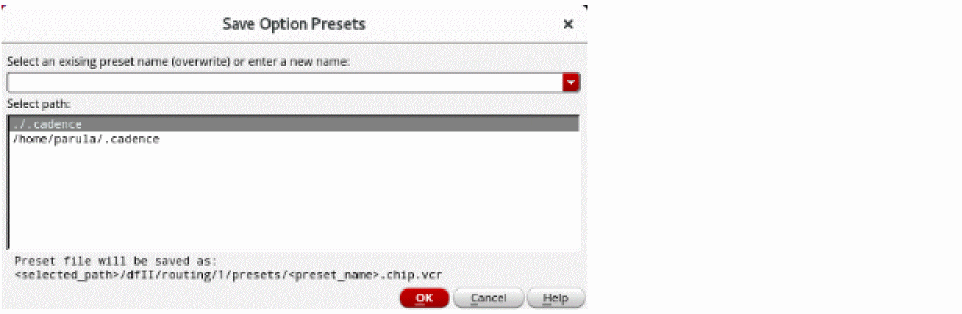
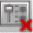
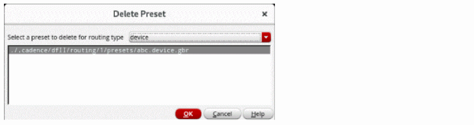

Loading, Saving, and Deleting a Routing Preset
A preset is a set of predefined routing options and user override constraint values, which can be saved to a file. In the routing flow, the presets are used to reuse the settings and routing configurations that you had specified in the Routing assistant.
Loading a Preset
The Load Preset options button lets you load an already existing preset. To load a preset for specific router settings:
-
Click the Load preset options
button on the Routing assistant toolbar.
The Load Option Presets form is displayed.
 - Select a preset for the routing type that is selected in the Routing assistant.
-
Click OK.
The settings for the selected routing type in the selected preset file are loaded in to the Routing assistant.
Saving a Preset
The Save preset options button lets you save the routing settings variables to a preset file. To save specific router settings as a preset:
- Specify the required Routing assistant settings as required by your design objectives.
-
Click the Save preset options
button on the Routing assistant toolbar.
The Save Option Presets form is displayed.
 - Select an existing preset name of enter a new name.
- Select the path where you want to save the preset file.
-
Click OK.
The preset file is saved as filename.chip.vcr.
Deleting a Preset
The Delete preset options button lets you delete an existing chip assembly routing preset. To delete an existing preset:
-
Click the Delete preset options 
button on the Routing assistant toolbar.
The Delete Preset form is displayed.
 -
Select the routing type for which you want to delete the preset.
The presets for the selected routing type appears in the list box. - Select the preset that you want to delete for the selected routing type.
-
Click OK.
The selected preset file is deleted.
Related Topics
Accessing the Routing Assistant
Routing Assistant User Interface for Chip Assembly Routing Flow
Return to top